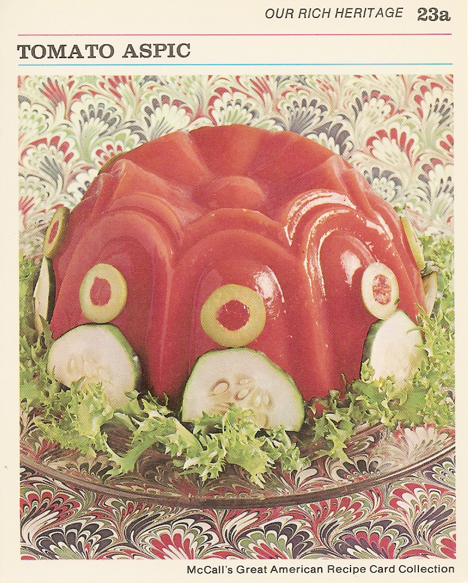

Tomato Aspic

Make this and you'll be a star
Imagine this: your party is going great, until Suzie from HR snidely remarks, "Where's the cocktails?" The music stops and you're met with dissaproving eyes. Jeff shakes his head. But you're not worried, because you've prepared Tomato Aspic just for the occasion. Little does Suzie know that "This recipe is a jellified Bloody Mary, sort of," you say. The music resumes and everyone cheers. Jeff nods in approval. Let's not embarrass ourselves now, Suzie.
Ingredients
Makes 8 servings
- 3 envelopes unflavored gelatine
- 1 can (14 oz) tomato juice
- 12 whole black peppers
- 8 whole cloves
- 2 bay leaves
- 1/4 teaspoon salt
- In medium saucepan, combine 5 cups tomato juice, peppers, cloves, bay leaves, and salt. Bring to a boil, reduce heat, then simmer for 5 minutes.
- Sprinkle gelatine over remaining tomato juice to soften. Add to hot mixture, stir until gelatine is dissolved. Remove from heat.
- Strain mixture. Pour into 12 individual molds or a 1 1/2 quart mold.
- Refrigerate until firm- atleast 3 hours.
- To unmold: Run small spatula around edge of mold. Invert on serving plate, place a hot, damp dishcloth on bottom of mold, and shake gently to release. Garnish as desired- with sliced olives, green peppers, cucumber, or salad greens. Serve with mayo.
Main